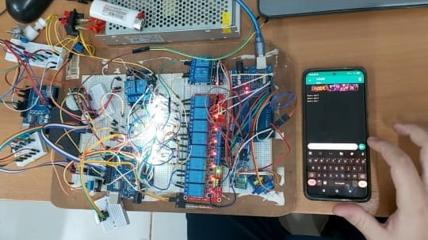
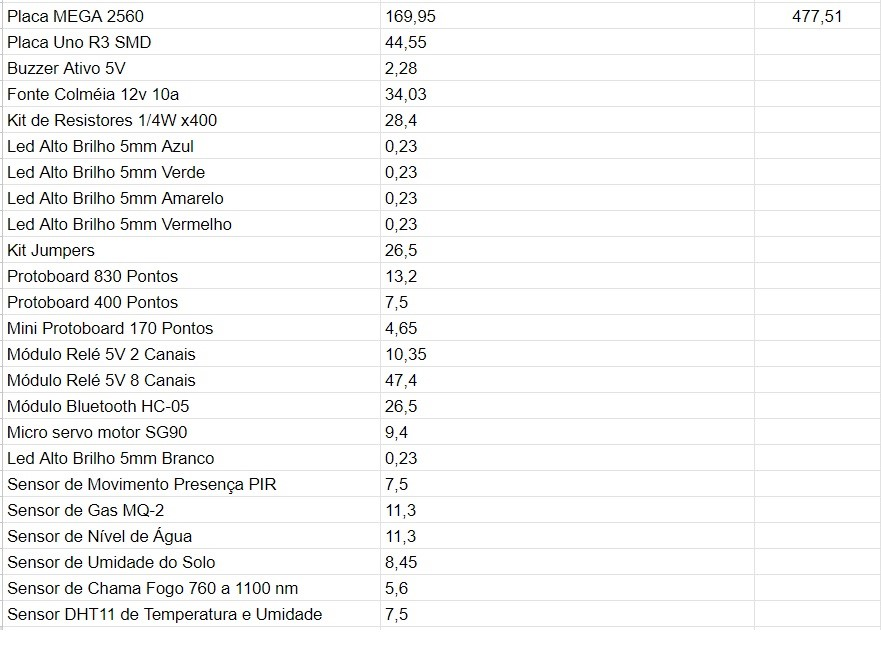
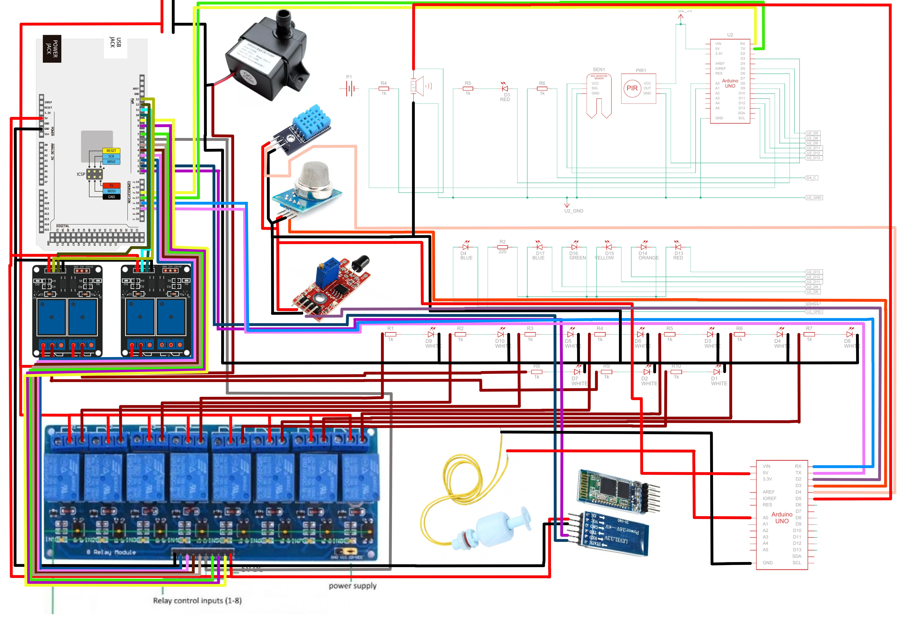

A automação residencial é um avanço tecnológico que facilita a vida, proporcionando mais conforto, segurança e eficiência energética. No entanto, ainda enfrenta desafios como altos custos e a complexidade de instalação. Este projeto busca oferecer uma solução prática e acessível, integrando sensores e placas programáveis para monitoramento em tempo real e automação de sistemas como iluminação e irrigação, incluindo comandos de voz e texto. A proposta visa disseminar o conhecimento sobre automação, promovendo tecnologias sustentáveis e flexíveis, adaptáveis para futuras expansões e aplicações.
Matheus Dakan Batista Bento
Instituto Federal de Mato Grosso do Sul (IFMS) - Campus Dourados
Email: matheus.bento@estudante.ifms.edu.br
Jónison Almeida dos Santos
Instituto Federal de Mato Grosso do Sul (IFMS) - Campus Dourados
Email: jonison.santos@ifms.edu.br
Aqui você encontrará um exemplo de código que foi utilizado no projeto.
// Exemplo de código em Arduino
int pinoledverm = 6; //Pino ligado ao led vermelho
int pinoledazul = 7; //Pino ligado ao led azul
int pinopir = 2; //Pino ligado ao sensor PIR
int acionamento; //Variavel para guardar valor do sensor
int Sensor = 3;
int Buzzer = 13;
int Var = 0;
int rele1 = 4;
int rele2 = 5;
#include
#define DHT11PIN 8
dht11 DHT11;
#define umidadeAnalogica A0 //Atribui o pino A0 a variável umidade - leitura analógica do sensor
#define umidadeDigital 7 //Atribui o pino 7 a variável umidadeDigital - leitura digital do sensor
#define LedVermelho 9 //Atribui o pino 7 a variável LedVermelho
#define LedVerde 10 //Atribui o pino 6 a variável LedVerde
int valorumidade; //Declaração da variável que armazenará o valor da umidade lida - saída analogica
int valorumidadeDigital; //Declaração da variável que armazenara a saída digital do sensor de umidade do solo
void setup()
{
Serial.begin(9600);
// pinMode(pinoledverm, OUTPUT); //Define pino como saida
// pinMode(pinoledazul, OUTPUT); //Define pino como saida
pinMode(rele1, OUTPUT);
pinMode(rele2, OUTPUT);
pinMode(pinopir, INPUT); //Define pino sensor como entrada
pinMode(Buzzer, OUTPUT);
pinMode(Sensor, INPUT);
pinMode(umidadeAnalogica, INPUT); //Define umidadeAnalogica como entrada
pinMode(umidadeDigital, INPUT); //Define umidadeDigital como entrada
pinMode(LedVermelho, OUTPUT); //Define LedVermelho como saída
pinMode(LedVerde, OUTPUT); //Define LedVerde como saída
pinMode(6, OUTPUT);
pinMode(9, OUTPUT);
pinMode(10, OUTPUT);
pinMode(11, OUTPUT);
pinMode(12, OUTPUT);
}
void loop()
{
Var=digitalRead(Sensor);
Serial.print(Var);
if(Var<1)
{
digitalWrite(Buzzer, HIGH);
Serial.println("Fogo detectado!!!");
delay(8000);
digitalWrite(Buzzer, LOW);
delay(20);
}
acionamento = digitalRead(pinopir); //Le o valor do sensor PIR
if (acionamento == LOW) //Sem movimento, mantem led azul ligado
{
digitalWrite(rele1, HIGH);
digitalWrite(rele2, HIGH);
}
else //Caso seja detectado um movimento, aciona o led vermelho
{
digitalWrite(rele1, LOW);
digitalWrite(rele2, LOW);
}
int chk = DHT11.read(DHT11PIN);
Serial.println();
Serial.println();
Serial.println();
Serial.println();
Serial.println();
Serial.print("Umidade (%): ");
Serial.println((float)DHT11.humidity, 2);
Serial.print("Temperatura (C): ");
Serial.println((float)DHT11.temperature, 2);
delay(2000);
valorumidade = analogRead(umidadeAnalogica); //Realiza a leitura analógica do sensor e armazena em valorumidade
valorumidade = map(valorumidade, 1023, 315, 0, 100); //Transforma os valores analógicos em uma escala de 0 a 100
Serial.print("Umidade encontrada: "); //Imprime mensagem
Serial.print(valorumidade); //Imprime no monitor serial o valor de umidade em porcentagem
Serial.println();
valorumidadeDigital = digitalRead(umidadeDigital); //Realiza a leitura digital do sensor e armazena em valorumidadeDigital
digitalWrite(A0, LOW);
// Serial.println("%");
digitalWrite(6, LOW);
digitalWrite(9, LOW);
digitalWrite(10, LOW);
digitalWrite(11, LOW);
digitalWrite(12, LOW);
if (valorumidade < 13) {
digitalWrite(12, HIGH);
} else {
if (valorumidade< 25) {
digitalWrite(11, HIGH);
} else {
if (valorumidade < 70) {
digitalWrite(10, HIGH);
} else {
if (valorumidade < 80) {
digitalWrite(9, HIGH);
} else {
digitalWrite(6, HIGH);
}
}
}
}
delay(100); // Wait for 100 millisecond(s)
if (valorumidadeDigital == 0) { //Se esse valor for igual a 0, será mostrado no monitor serial que o solo está úmido e o led verde se acende
Serial.println("Status: Solo úmido");
// digitalWrite(LedVermelho, LOW);
// digitalWrite(LedVerde, HIGH);
}
else { // se esse valor for igual a 1, será mostrado no monitor serial que o solo está seco e o led vermelho se acende
Serial.println("Status: Solo seco");
// digitalWrite(LedVermelho, HIGH);
// digitalWrite(LedVerde, LOW);
}
delay(3000); //Atraso de 500ms
Serial.println(analogRead(A1));
if(analogRead(A1) > 1100) digitalWrite(Buzzer, HIGH);
else digitalWrite(Buzzer, LOW);
}
Para tornar o projeto acessível, utilizamos componentes de baixo custo. Abaixo está uma lista dos principais componentes utilizados e seus respectivos preços.
| Componente | Preço | Valor total |
|---|---|---|
| Placa MEGA 2560 | R$ 169,95 | R$ 477,51 |
| Placa Uno R3 SMD | R$ 44,55 | |
| Buzzer Ativo 5V | R$ 2,28 | |
| Fonte Colméia 12v 10a | R$ 34,03 | |
| Kit de Resistores 1/4W x400 | R$ 28,4 | |
| Led Alto Brilho 5mm Azul | R$ 0,23 | |
| Led Alto Brilho 5mm Verde | R$ 0,23 | |
| Led Alto Brilho 5mm Amarelo | R$ 0,23 | |
| Led Alto Brilho 5mm Vermelho | R$ 0,23 | |
| Kit Jumpers | R$ 26,5 | |
| Protoboard 830 Pontos | R$ 13,2 | |
| Protoboard 400 Pontos | R$ 7,5 | |
| Mini Protoboard 170 Pontos | R$ 4,65 | |
| Módulo Relé 5V 2 Canais | R$ 10,35 | |
| Módulo Relé 5V 8 Canais | R$ 47,4 | |
| Módulo Bluetooth HC-05 | R$ 26,5 | |
| Micro servo motor SG90 | R$ 9,4 | |
| Led Alto Brilho 5mm Branco | R$ 0,23 | |
| Sensor de Movimento Presença PIR | R$ 7,5 | |
| Sensor de Gas MQ-2 | R$ 11,3 | |
| Sensor de Nível de Água | R$ 11,3 | |
| Sensor de Umidade do Solo | R$ 8,45 | |
| Sensor de Chama Fogo 760 a 1100 nm | R$ 5,6 | |
| Sensor DHT11 de Temperatura e Umidade | R$ 7,5 |
Encontre mídias sobre a instalação, manutenção e uso de sistemas de automação residencial utilizando hardware livre.
Aqui está uma imagem da elétrica da casa automatizada:
Aqui está uma tabela dos custos da maquete:
Aqui está um diagrama da casa automatizada:
Se você tiver dúvidas ou quiser saber mais sobre o projeto, entre em contato conosco:
Email: jonison.santos@ifms.edu.br ou matheus.bento@estudante.ifms.edu.br